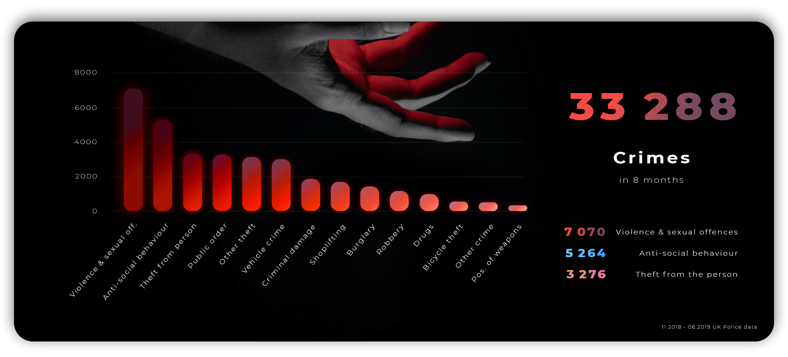
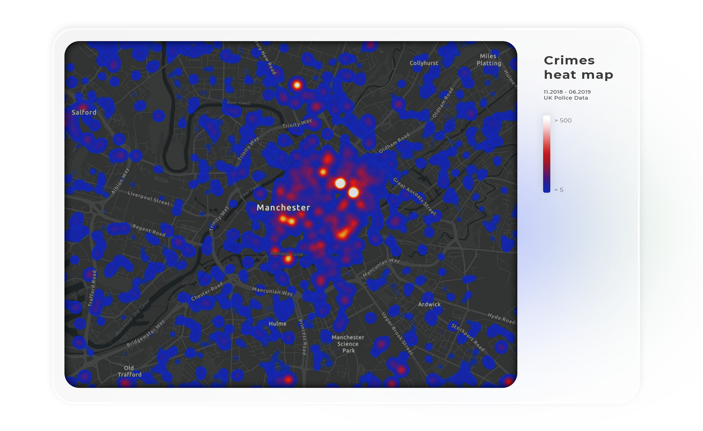
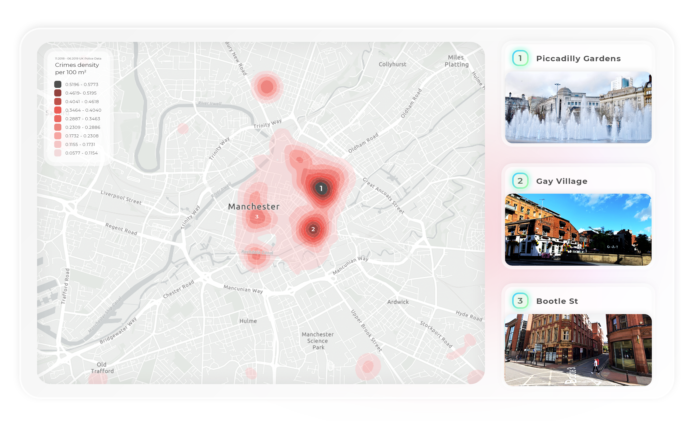
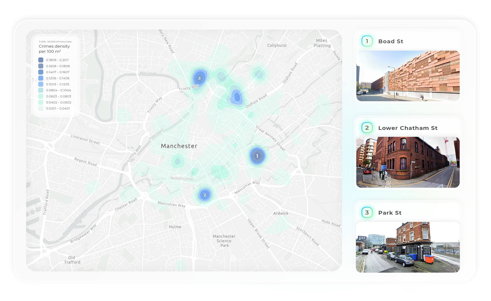

Visualisations of crime in Manchester
22.02.2022
Research and various visualisations about crime in Manchester city centre area during 11.2018-06.2019
Introduction
The analysis aimed to explore the crime hotspots in the Manchester city centre area and to create visualisations
that illustrate the findings. People care if their home city is safe, and if not, where are the most dangerous
places to avoid. It would be good to know if any specific phenomenon needs attention.
Methodology
The data was gathered from the UK Police website (Data downloads, 2019). Only the Greater Manchester Police street
crime data was downloaded and processed. The available months were November 2018 to Jun 2019. Police have recorded
the reports for crime tracking and made the data publicly available. The locations have been anonymised by grouping
them near addresses which have many postal addresses or are above a commercial premise like a Shopping Centre or
Nightclub.
For the first visualisation, Google Sheets was used for creating an initial bar chart. It was exported to photoshop
and transformed into a more engaging graphic with a glorious hand picture from Jeff Hardi (Hardi, 2019).
Maps were made with ArcGIS Online mapping tool and later framed and finalised in Photoshop. The area mapped and
analysed is a hand-picked view between coordinates (53.4604, -2.2884) to (53.4975, -2.1821) latitude and longitude
accordingly. It consisted of 33 288 crimes out of 256 313 Greater Manchester area crimes.
Density analysis was used to map the crime hotspots. More specifically, it's using the algorithm from the Kernel
Density tool in ArcGIS Pro under the hood (Calculate Density, 2022). The Calculate Density tool calculated an
appropriate search distance for determining neighbourhood size, did not clip the output, classified the output as
an equal interval with 10 classes, and provided the output densities per square kilometres that were converted to
per 100 square meters for a more relatable legend, since kilometers are too lengthy in the sense of a city area.
(Calculate Density, 2022). The analysis ran five times. Violence and sexual offences, vehicle crime, anti-social
behaviour, public order and theft from the person were all analysed. Yet, only the first two, the most distinctive,
were chosen.
The pictures on the right-hand side are from Google Street View (Google Inc, 2020, 2021). However, the Piccadilly
Gardens photo is by Shishir Pandey (Pandey, 2020) and Gay Village photo by Lisanna Põlluaas (Põlluaas, 2021).
Fundamental metrics

Figure 1: Different crime type counts in Manchester city area during 8 months (Data downloads, 2019)
Visual choices
The first visualisation (Figure 1) is a general bar chart that describes all the crime types
and their counts. Its dark theme and blood shaded bars with the hand photograph represent
crime as a horrible experience. The category labels were not that long to use horizontal bars
so they are diagonal, which feels balanced. For the ease of quick look, the bars were sorted
(Module 03: Thinking with Charts, 2021).
Overview
There were 33 288 crimes from which Violence and sexual offences, reported 7 070 times, occur the most in the
Manchester city area. The second most reported crime type is anti-social behaviour, recorded 5 264 times.
UKCrimeStats (Greater Manchester Police, 2019) shows information about the Greater Manchester area for the same
period and has a similar ranking, namely violence in the lead. An older Verisure (Manchester Crime Statistics, 2016)
research for 2015-2016 shows that anti-social behaviour was the most problematic in Manchester. Hence violence,
sex offences and anti-social behaviour have been the biggest concerns of the Manchester city area during previous
years.
Heat map of all crimes

Figure 2: Crimes heat map in Manchester city area (Data downloads, 2019)
Visual choices
The heat map (Figure 2) shows the distribution of all the crimes reported in Manchester. It gives a realistic
overview of the situation before moving on with the more specific density analysis maps. Crime usually happens
more at night, so the map is designed dark. The heat map colours represent fire. Colder represents a lower crime
count (lower than 5 crimes), and the brightest parts illustrate the places with the highest crime activity
(higher than 500 crimes).
Findings
The brightest spots are around Picadilly Gardens and Market street. The hot point at the top is HM Prison Manchester.
Marron Place, Bootle Street (under Manchester label) and Gay Village (long heat line on the right of the city centre)
also have high
crime activity in the city area. Finally, the Metrolink Deansgate Castlefield tram stop area seems to have a high crime rate.
Manchester EveningNews (Robson, 2019) mentioned all of these places as the worst crime places except for Marron Place and
Bootle Street. However, they have written about Bootle Street in another article (Cachia and Osuh, 2019) related to unsafe
clubbing. All three, Deansgate, Marron Place and Bootle Street, are probably closely connected by the location. In conclusion,
the biggest crime hotspots tend to be publicly popular places, for example, festival sites or shopping and clubbing areas.
Violence and sexual offences

Figure 3: Violence and sexual offences density distribution in Manchester city area (Data downloads, 2019)
Visual choices
The first density analysis map is about violence and sexual offences (Figure 3). Black, often related to death,
represents the densest area for criminal activity. The lighter the red colour, the less crime area has.
The light gray map provides a comfortable and dull background for the bright red colors to follow the first rule of
Eduard Imhof’s colour use (Imhof, 2007). There is a legend box on the left top corner for more specific colour codes
and the data source. The map also includes pictures of the top 3 places to help people recall these locations better.
Findings
The most high-risk areas regarding violence and sex offences are already known places. Picadilly Gardens, Gay Village
and Bootle Street were the hottest spots on the previous heat map, and it is the same case here. The more intriguing
part is that there's one light spot in the city centre, between Manchester Central Convention Complex, Midland Hotel
and Bridgewater Hall. It might be the case that violent gangs do not prefer to hang out in front of convention centres
or concert venues. There is a hotspot with a maximum density of 0.1731 crimes per 100 m2 at the bottom of the map. It
is the location of the Manchester Royal Infirmary. One of the worst crimes that recently had taken place was a robbery
from a double amputee after he had just woken up from a six-week coma (Whitbread, 2021). Even the place where people
get help and treatment includes criminal activity.
Vehicle crime

Figure 4: Vehicle crime density distribution in Manchester city area (Data downloads, 2019)
Visual choices
The second density analysis map is about vehicle crime (Figure 4). Blue hue should be one of the least frequently
occurring colours in humans. Hence it was chosen to represent cars and other vehicles. Dark blue colour value means
densest, and lighter blues mean less density in those areas. Again there is a legend box on the left top corner with
extra information and pictures of the top 3 places. Note that all the previous density and heat map areas with smooth
edges are algorithmic estimations that do not depict the actual crime borders. This was criticized by William Rankin
that by using these methods, maps become ubiquitous (Rankin, 2020). However, if this information is acquired wisely,
then these maps illustrate the most critical points well.
Findings
Surprisingly all the top 3 hotspots are near railway stations. More specifically, the parking lots around the stations
show a high density of vehicle crimes. Probably it's because of a large number of people, wanting to travel by train or
need to park before walking to the city centre, often leaving their car there. Therefore the nearest parking spaces
have many opportunities for thieves and rebels. Railway stations can be great at spreading crime. In a study about the
effect of public transit on crime conducted by David C. Phillips and Danielle Sandler, it was found that shutting down
stations will reduce crime by 5% at other connected stations (Phillips and Sandler, 2014). It may make sense that
thieves and hooligans use more public than private transport and would want to get their hands on something right away
when they have arrived. Since there are rows of cars under poor supervision then this translates to crime dense areas
around railway stations.
The highest vehicle crime density per 100 m2 is at the Manchester Piccadilly station parking area. Manchester
EveningNews wrote an entire article about Store Street Car Park, which is next to it, how there are even police warning
signs that there are thieves around (Gregson, 2021). The second place is Manchester Oxford Road and the third Manchester
Victoria railway station area.
There is another darker blue spot around the Skyline Central complex. This study does not have an answer as to why this
is the case. Moreover, there is a similar unknown situation with Deansgate, which doesn’t have that many vehicle crimes
compared to other stations but is part of the four main Manchester railway stations.
Conclusion
This analysis focused on Manchester city centre rather than the whole Greater Manchester area. The findings and
visualisations give a new picture of the situation during the eight months November 2018 to June 2019. The crime rate
was high during that period, and it was valuable to examine.
Violence and sexual offences were demonstrated to be the case in well-known areas and clubs. Unfortunately, even near
hospitals, there might be a high probability of being exposed to criminal activity. Railway stations’ parking spaces
came to be hotspots for vehicle crime and should be avoided until the security measures are increased.
This research has been done with data from almost three years ago. Hence it may not depict the actual situation anymore.
The data used is less than a year, and months like July, August, September and October were left out though these could
play a considerable role in the final results.
Hopefully, this paper can be helpful to understand the crime situation in Manchester city centre and provide insight
for authorities or be a starting point for further investigation. For example, why does the Skyline Central area have
a high vehicle crime density or is Bridgewater Hall's front side a safe zone? Altogether, big thanks to everyone who
gathered the data, took photos of these places and wrote interesting articles about this topic.
Bibliography
Data.police.uk. 2019. Data downloads. [online] Available at: [Accessed 20 December 2021].
Hardi, J., 2019. Hand with dark red background. [image] Available at: [Accessed 24 December 2021].
Ukcrimestats.com. 2019. Greater Manchester Police. [online] Available at: [Accessed 29 December 2021].
Verisure Monitored Alarms. 2016. Manchester Crime Statistics. [online] Available at: [Accessed 29 December 2021].
Pandey, S., 2020. Piccadilly Gardens fountain. [image] Available at: [Accessed 25 December 2021].
Cachia, A. and Osuh, C., 2019. The most dangerous places to go clubbing in Manchester revealed. Manchester EveningNews, [online] Available at: [Accessed 29 December 2021].
Robson, S., 2019. The worst places in Manchester city centre for sex attacks, robberies and break-ins have been revealed. Manchester EveningNews, [online] Available at: [Accessed 29 December 2021].
Whitbread, D., 2021. Double amputee robbed in hospital hours after waking from coma to find he'd lost his leg. Mirror, [online] Available at: [Accessed 29 December 2021].
Gregson, L., 2021. Is it really all that bad? The city centre car park that's been branded terrible. Manchester EveningNews, [online] Available at: [Accessed 29 December 2021].
Imhof, Eduard. Cartographic Relief Presentation. (Redlands, CA: ESRI Press, 2007).
Põlluaas, L., 2021. Photograph of Gay Village. [image].
UCIL20041/00 Visualising Information: Uses and Abuses of Data. Unpublished. 2021. Module 03: Thinking with Charts. [online course content] University of Manchester.
Rankin, W., 2020. The Accuracy Trap: The Values and Meaning of Algorithmic Mapping, from Mineral Extraction to Climate Change. Yale University.
Google Inc, 2021. Photograph of 2 Bootle St, Manchester, United Kingdom. Google Street View. [image] Available at: [Accessed 25 December 2021].
Google Inc, 2021. Photograph of Boad St, Manchester, United Kingdom. Google Street View. [image] Available at: [Accessed 25 December 2021].
Google Inc, 2021. Photograph of 11 Hulme St, Manchester, United Kingdom. Google Street View. [image] Available at: [Accessed 25 December 2021].
Google Inc, 2020. Photograph of 10 Robert St, Manchester, United Kingdom. Google Street View. [image] Available at: [Accessed 25 December 2021].
Phillips, D. and Sandler, D., 2014. Does public transit spread crime? Evidence from temporary rail station closures. Hope College and US Census Bureau, United States.
Doc.arcgis.com. 2022. Calculate Density. [online] Available at: [Accessed 26 December 2021].